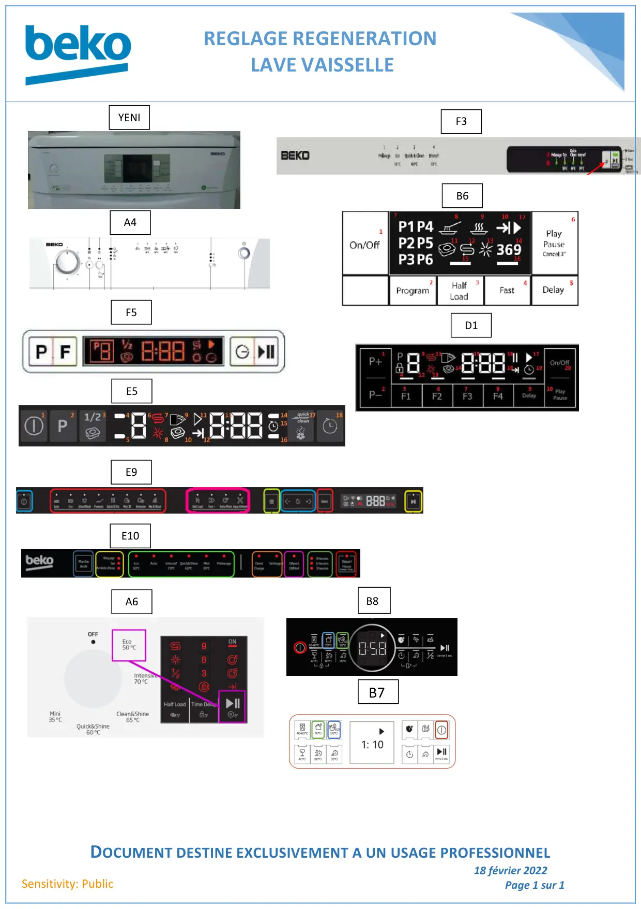

Régénération pour FLS et Drive

REGLAGE REGENERATIONLAVE VAISSELLEDOCUMENT DESTINE EXCLUSIVEMENT A UN USAGE PROFESSIONNEL18 février 2022Page 1 sur 1Sensitivity: PublicYENIF3A4B6F5E5E9E10A6B8D1B7
1 / 1Liens de ce document (12)
PDFRégénération lave vaisselle YENI MINI MARTI2 p.PDFRégénération lave vaisselle A41 p.PDFRégénération lave vaisselle F61 p.PDFRégénération LVI F53 p.PDFRéglages Régénération lave vaisselle B64 p.PDFRéglages Régénération LVI E52 p.PDFRéglages Régénérations lave vaisselle D12 p.PDFRéglage régénération lave vaisselle E102 p.PDFRéglage régénération lave vaisselle A61 p.PDFRéglage régénération liquide rinçage electronique lave vaisselle B81 p.PDFRégénération lave vaisselle E91 p.PDFNote Info lave vaisselle Grundig Regeneration B71 p.